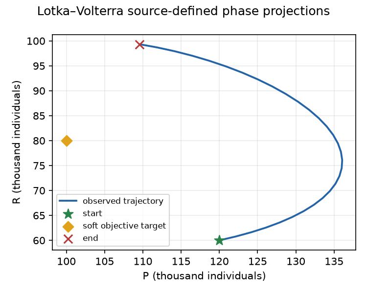
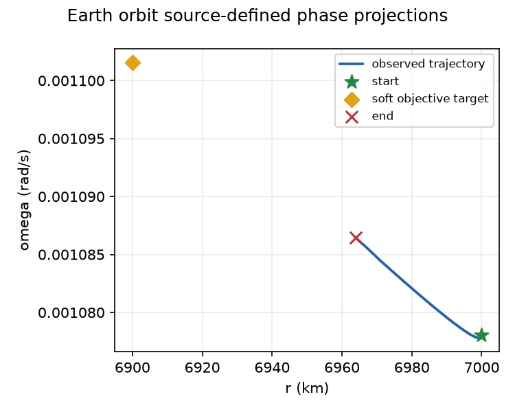
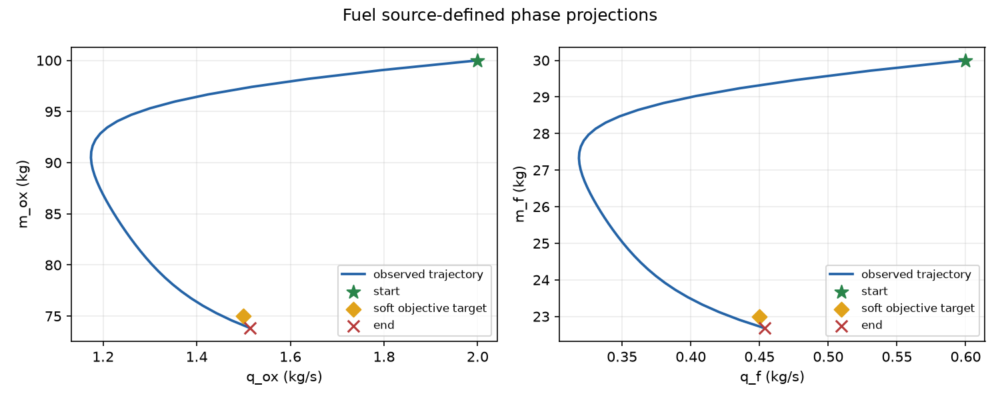

Closed-loop pilot: three source-bound tasks
Versioned numerical report · publication status: review and main-only Pages deployment pending
What ran
Each task used the source-bound continuous NMPC profile. At every original stage, the controller queried the observed physical state, applied one control hold, and advanced the nonlinear plant through the common CSL adaptive RK4 step-doubling executor. Every trajectory retains its original task, action profile, N/T, objective and absolute-stage identities. Solver predictions are distinct from applied plant observations.
Controller source commit 4478a07052b41ce7de047fca47649933cc722a16. Reports are one-off numerical observations; there is no global-optimality, reachability, safety, robustness or speed-winner claim.
Episode results
| Task | Applied holds | Terminal + running = total | Objective disagreement (common; tight) | Raw evidence |
|---|---|---|---|---|
| SYN-NL-LV-01 | 30/30 | 0.06755422575467881 + 0.02413055940836798 = 0.0916847851630468 | 0; tight 0 | attempt · common check |
| ENV717-EARTH-ORBIT-CONTINUOUS-01 | 20/20 | 63.89918301942375 + 1.330481345197969 = 65.22966436462173 | 0; tight 0 | attempt · common check |
| SYN-NL-FUEL-01 | 40/40 | 0.0002544882053355357 + 0.003571496881908354 = 0.00382598508724389 | 8.67e-19; tight 8.67e-19 | attempt · common check |
Observed trajectories



Independent checks and limits
Both common and tighter full-episode CSL replays completed. Physical state bounds were checked on each replay's numerical report grid (20 samples per original hold plus the initial state); applied input bounds were checked on the original held controls. These sampled checks are not continuous-time certificates.
Initial episodes retained in the coverage record:
- earth-orbit-20261111T112014Z-ad48e1da: incomplete; 0 holds recorded
- earth-orbit-20261111T112358Z-84ef9239: incomplete; 0 holds recorded
- earth-orbit-20261111T112429Z-d2b6da4c: incomplete; 19 holds recorded
- syn-nl-lv-01-20261111T114844Z-aa23c1a5: failed-before-worker-start; 0 holds recorded
Portable append-only coverage map · Task and controller source identities · Capability manifest · Minimal Lotka–Volterra 2D example · Offline report and raw-record bundle
Source-bound attempt and check JSON is included under raw/. Report publication and live URL/hash verification remain pending.